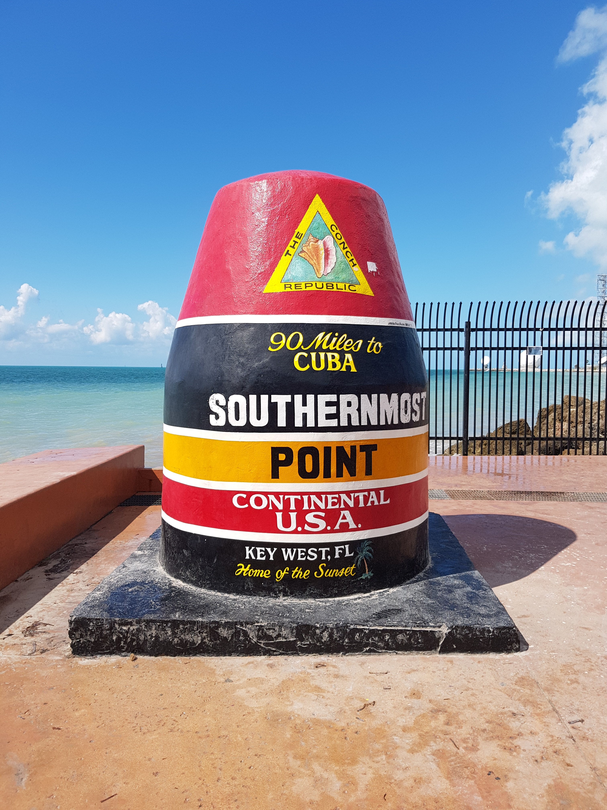

If you are visiting Miami for more than four or five days, you shouldn’t miss a trip to Key West, driving through the most spectacular highway you will ever experience, The Overseas Highway (US Hwy 1)! It’s the tropical version of the perfect USA road trip, and without any doubts one of the most unique roads in the world. It connects over than 113 mangrove-and-sandbar islands up to Key West, the best-known island. Key West is a beautiful tropical island, full of classical Caribbean homes, country music and extravaganza! One of the most iconic places in Key West is Mallory Square: when the sun starts to set, hundreds of people meet there to admire the sunset and watch dozens of street performers, acrobats and comedians doing their shows all around the street! After the sunset you should have dinner or grab a beer in one of the bars along Duval Street, a place where it’s impossible to get bored! Don’t forget to try the amazing Key Lime Pie, a creamy tart named after the small citrus fruits which grow in Key West. I’ve tried that of Key West Key Lime Pie Company, whose pies are national award winning, made fresh daily using real key lime juice and all-natural ingredients.
Don’t forget to stop by the most photographed spot on the island, the Southernmost Point, a black and red buoy which isn’t even the real southernmost point in USA.
It’s a little bit overrated attraction but still perfect to take catchy Instagram pictures!
